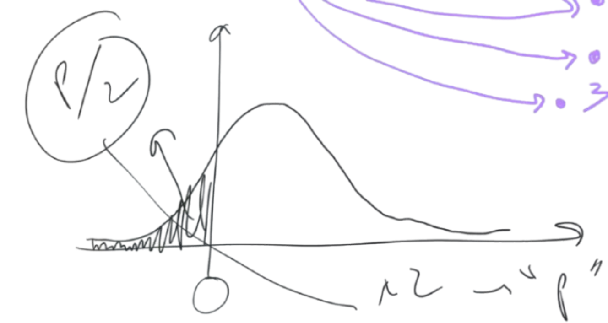

Définition du bootstrap = technique de rééchantillonnage avec remise à partir d’un échantillon initial pour estimer la distribution d’un estimateur.
Utile pour petits effectifs ou lorsque les hypothèses classiques ne sont pas respectées.
En recherche clinique : souvent faible nombre de sujets et variance importantes.
Si 2*10 sujets :
ok pour tests non paramétriques : Wilcoxon et Mann-Whitney
bof pour tests paramétriques (car difficile de dire que ça suit une loi normale alors qu’on a peu de données) : t de Student, chi2, Fisher…
Exemple si n = 100 et distribution très asymétrique :
test t pas terrible !!!
analyse de variance ou régression linéaire : il faudrait aussi une distribution normale !
Solution : bootstrap ! = rééchantillonner avec remise à partir de l’échantillon initial pour estimer la distribution de l’estimateur.
2 Principe du bootstrap
Imaginons qu’on veuille faire la régression : \[Y = a + bX1 + cX2 + \epsilon\]
Sauf que Y ne suit pas du tout une loi normale.
On reprend le jeu de données
ID
Y
X1
X2
1
2
3
…
100
2.1 Tirage avec remise
On tire au hasard avec remise 100 observations parmi les 100 initiales, c’est à dire :
On en tire au sort 1 : le numéro 28
On le remet dans le sac
On en tire au sort un deuxième : le numéro 77
On le remet dans le sac
On en tire au sort un troisième : le numéro 28
ça donnera un tableau :
ID
Y
X1
X2
28
77
28
…
13
Donc nouveau jeu de données !!
Sur lequel on fait à nouveau la régression linéaire : \[Y = a + bX1 + cX2 + \epsilon\]
\(\rightarrow\) on met le b en mémoire !
On refait la même chose !!
ID
Y
X1
X2
6
82
15
…
6
Nouveau modèle de régression linéaire : \[Y = a + bX1 + cX2 + \epsilon\]
\(\rightarrow\) on obtient un nouveau b qu’on garde aussi
Et ainsi de suite !!!
On fait ça 10 000 fois (au delà de 10 000, pas vraiment interessant)
2.2 Histograme des 10 000 valeurs de b
Objectif : test de b = 0 (c’est à dire pas d’effet de X1 sur Y)
On trace l’histogramme des 10 000 valeurs de b obtenues

On prend les deux extrémités (2.5% et 97.5%) pour obtenir un intervalle de confiance à 95%
L’intervalle de confiance n’a pas besoin de la normalité de la distribution car fait à la main directement à partir des données !
Combien de b < 0 donne la p value divisée par 2 ⇒ multipliée par 2 donne le vrai petit p du test b = 0 (c’est à dire pas d’effet de X1 sur Y)
QUESTIONS :
Échantillons sont indépendants ?
Oui ! car on tire au hasard avec remise donc chaque tirage est indépendant des autres
C’est un tirage de 100 sujets parmi la population infinie !
Machine learning ?
Non : c’est plutôt une simulation statistique
Nombre de régressions ?
10 000 régressions
2.3 Faisabilité du bootstrap
A partir de 30 - 50 sujets, le bootstrap est fiable.
100 : on est serein !
3 Exemple en R sur expsy
Librairies nécessaires
library(boot)
Attaching package: 'boot'
The following object is masked from 'package:survival':
aml
library(psy)# fabriquer une fonction pour faire le bootstrap de kappa# fonction entre accolades# x, tirer au sort à chaque ligne# 2, c'est pour récupérer kappackappa.boot <-function(data,x) {ckappa(data[x,])[[2]]}
Faire le bootstrap
library(boot)library(psy)# fabriquer une fonction pour faire le bootstrap de kappa# fonction entre accolades# x, tirer au sort à chaque ligne# 2, c'est pour récupérer kappackappa.boot <-function(data,x) {ckappa(data[x,])[[2]]}
Syntaxe :
créer une fonction ckappa.boot qui prend en entrée data (jeu de données) et x (tirage au sort des lignes)
à l’intérieur de la fonction, on calcule kappa sur les données rééchantillonnées data[x,] et on récupère la 2ème valeur (kappa)
pour savoir que c’est la 2ème valeur, on a fait ckappa(expsy[,c(12,14)]) pour voir la sortie
Lancer le bootstrap
res <-boot(expsy[,c(12,14)],ckappa.boot,1000)
Syntaxe :
res : objet qui va contenir le résultat du bootstrap
boot() : fonction de la librairie boot pour faire le bootstrap
expsy[,c(12,14)] : jeu de données
on ne prend que les colonnes 12 et 14 (2 évaluateurs)
ckappa.boot : fonction créée précédemment pour calculer kappa sur les données rééchantillonnées
quantile(res$t,c(0.025,0.975)) : calcul des quantiles 2.5% et 97.5% des kappa calculés sur les échantillons rééchantillonnés
boot.ci(res,type="bca") : calcul de l’intervalle de confiance à 95%
type = “bca” : méthode BCa (bias-corrected and accelerated) qui est meilleure que la méthode des quantiles
Test statistique : exemple pour kappa > 0.2
Si on veut tester :
hypothèse nulle H0: kappa ≤ 0.2
hypothèse alternative H1: kappa > 0.2.
# On calcule le nombre de fois où le kappa des échantillons bootstrap est inférieur ou égal à 0.2n_inf <-sum(res$t <=0.2)n_inf
[1] 3
p_value <- (n_inf /1000)p_value
[1] 0.003
#phrase pour résultat : cat("La p-value unilatérale pour le test kappa < 0.2 est de ", round(p_value, 4), "\n")
La p-value unilatérale pour le test kappa < 0.2 est de 0.003
Avec une p-value < 0.025, on rejette l’hypothèse nulle au niveau de 2.5% et on conclut que le kappa est significativement supérieur à 0.2.
4 Second exemple en R sur SMP (CUSM)
Modèle de régression linéaire expliquant la variable “durée de l’entretien” (duree.interv)
mod <-lm(duree.interv~schizophrenie+depression+abus.subst+ gravite+charactere+trauma.enfant+age+factor(type.centre),data=smp)summary(mod)
Call:
lm(formula = duree.interv ~ schizophrenie + depression + abus.subst +
gravite + charactere + trauma.enfant + age + factor(type.centre),
data = smp)
Residuals:
Min 1Q Median 3Q Max
-38.578 -13.855 -1.769 10.922 64.405
Coefficients:
Estimate Std. Error t value Pr(>|t|)
(Intercept) 42.48996 3.99998 10.623 < 2e-16 ***
schizophrenie 3.06420 2.80997 1.090 0.275911
depression 6.71269 1.64793 4.073 5.21e-05 ***
abus.subst 4.60037 1.79854 2.558 0.010760 *
gravite 1.06236 0.56548 1.879 0.060737 .
charactere 1.62547 0.93536 1.738 0.082723 .
trauma.enfant -0.66805 1.66931 -0.400 0.689144
age 0.20788 0.06066 3.427 0.000649 ***
factor(type.centre)2 4.09540 2.53401 1.616 0.106546
factor(type.centre)3 -1.29681 2.44159 -0.531 0.595509
---
Signif. codes: 0 '***' 0.001 '**' 0.01 '*' 0.05 '.' 0.1 ' ' 1
Residual standard error: 18.02 on 645 degrees of freedom
(144 observations deleted due to missingness)
Multiple R-squared: 0.1086, Adjusted R-squared: 0.09619
F-statistic: 8.734 on 9 and 645 DF, p-value: 1.919e-12
#histogramme des résidushist(residuals(mod))
On constate que les résidus ne suivent pas une loi normale.
On va donc faire un bootstrap pour obtenir des intervalles de confiance et des p-values pour les coefficients.
Créer la fonction de bootstrap
Syntaxe :
créer une fonction lm.boot : c’est la recette de cuisine, qui prend comme arguments data et index
data (jeu de données = liste d’ingrédients) : recevra le jeu de données smp qui passera dans la fonction boot()
index (lignes qui seront tirées au sort avec remise par la fonction boot() = liste de course spécifiques) : vecteur des indices des lignes tirées au sort avec remise (peut ête ,x)
Cet argument index est automatiquement généré et fourni par la fonction boot() à chaque itération.
La seconde partie : le chef cuisinier boot() qui a accès au garde-manger (jeu de données initial smp) et à la recette de cuisine (fonction lm.boot).
Le chef :
crée lui même une liste de courses spécifiques (vecteur index des lignes tirées au sort avec remise)
prend la recette de cuisine (fonction lm.boot) et l’exécute avec les ingrédients (jeu de données smp[index, ])
la fonction renvoie les coefficients du modèle ajusté sur l’échantillon bootstrap.
le chef récupère les coefficients et les stocke.
refait ça 10 000 fois.
Fonction lm.boot = recette de cuisine
# fonction pour bootstrap des coefficients de régression linéairelm.boot <-function(data, index) {# 1. Création de l'échantillon bootstrap# La fonction `boot()` appelle cette fonction en boucle.# À chaque appel, `boot()` fournit un nouveau vecteur `index` qu'elle a généré. smp.boot <- data[index,] # 2. Ajustement du modèle linéaire sur l'échantillon bootstrap mod <-lm(duree.interv ~ schizophrenie + depression + abus.subst + gravite + charactere + trauma.enfant + age +factor(type.centre), data = smp.boot)# 3. Extraction et renvoi des coefficients du modèlecoefficients(mod)}
Application au jeu de données smp et affichage de l’histogramme des coefficients de la variable scz.cons (schizophrénie)
Intervalles de confiance pour tous les coefficients
ci_bca <-boot.ci(resboot, index =2, type ="bca") # on stocke l'IC une seule foisp_val_bootstrap <-2*sum(resboot$t[, 2] <=0) /10000# Afficher proprement les deux résultats sans chevauchement d'affichagecat(sprintf("L'intervalle de confiance à 95%% pour le coefficient de la variable scz.cons est [%.3f, %.3f].\n", ci_bca$bca[4], ci_bca$bca[5] ),sprintf("La p-value bilatérale pour le test du coefficient de la variable scz.cons est de %.4f.\n", p_val_bootstrap ),sep ="")
L'intervalle de confiance à 95% pour le coefficient de la variable scz.cons est [-1.970, 7.803].
La p-value bilatérale pour le test du coefficient de la variable scz.cons est de 0.2092.
Syntaxe :
boot.ci(resboot, index=2, type="bca") : calcul de l’intervalle de confiance à 95% pour le coefficient de la variable scz.cons (schizophrénie)
resboot : résultat du bootstrap
index=2 : précise que c’est la variable « schizophrénie » qui nous intéresse. (schizophrénie)
type="bca" : méthode BCa (bias-corrected and accelerated) qui est meilleure que la méthode des quantiles sur les petits échantillons